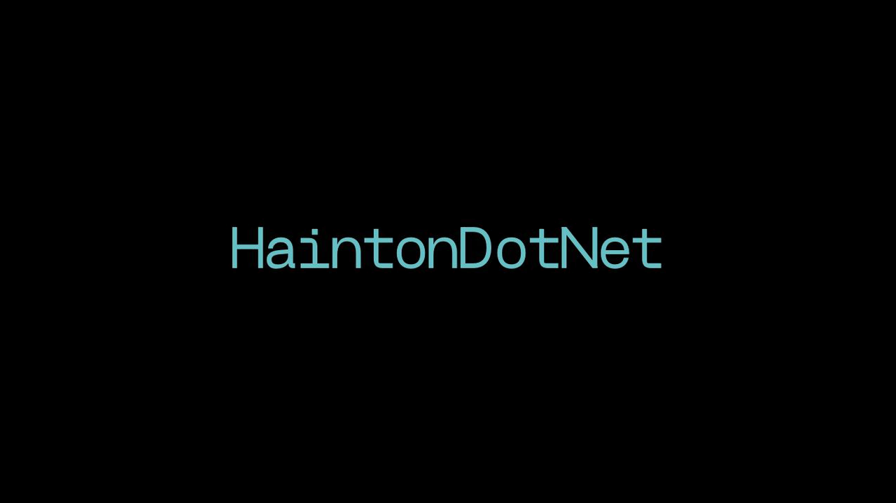

HaintonDotNet - IoT on Raspberry Pi
This article was originally published 21st June 2022 on Linkedin
Introduction
John Staveley for HaintonDotNet talked about IoT on Raspberry Pi
John Staveley is an MVP, IT Contractor in C#, MVC, SQL Server and more along with organising LeedSharp and IoTNorth and uses Microcontrollers but admits they're not an electronics expert.
You can run .NET 6 on Linux as well as previous versions like .NET Core. You can programming with C# on a Raspberry Pi, control hardware, control hardware from the outside world and receive updates from a device.
Hardware Overview
Raspberry Pi 40b, WiFi, Camera Port, GPIO, SPI, USB 2/3, Ethernet, HDMI etc. MicroSB card and USB-C power can also use Meadow and .NET Nanoframework on ESP32. Prepare to launch, so will need USB-C power supply supporting 3A, need Noobs software which is a flavour of Rasbian on MicroSD card. You also need a Screen, Keyboard and Mouse.
Basic Raspbian Setup
Install .NET 5, also install VS Code on the Raspberry PI if needed and set any security settings as everything is switched off by default. When you log into it for the first time you will get a welcome splash screen and then can go to the Raspberry Pi Configuration for example need to enable SSH.
Control the things
Digital Input/Output, Analog input, pulse-width modulation for hardware such as lights, I2C and Camera. Docs for C# and use System.Device.Gpio and Iot.Device.Bindings namespaces and can get inputs and outputs in code. Digital Output examples include LED, Buzzer, Infrared LED, Laser, Relay to switch high-voltage appliances, Multi-LED and so much more. To control some items, you will need special chips or need to deal with different voltage levels. There is support for pull up / down and anti-short and anti-back EMF diodes which makes it easier to integrate with Raspberry Pi.
You can use the Azure IoT Hub, which is free for less than 8,000 messages per day, can control hundreds of devices, supports Event Hubs, supports HTTP, AQMP, MQTT, can have Device Twins which is a JSON representation for the setup of the device, can run Edge software such as IT Edge. You can connect a device to Azure IoT Hub with a Device Client using an IotHubConnectionString and can have it handle messages and perform any actions.
Development Experiences
Develop in Visual Studio, publish to directory - deployment self-contained, target runtime - linux-arm and target framework .NET 5/6. You will need a fixed IP address and can SFTP files using FileZilla and then can use VNC and update permissions for files where needed.
Digital Input
Push button, reed switch, magnetic sensor, tilt switch, ball switch, knock sensor, light blocking, infrared receiver and motion sensor. You can also use Pulse-width modulation (PWM) to control devices, depending on width of signals can control devices in different ways such as with Servos, Lamps/LEDs, motors, pumps, fans, display dials, audio effects and more. Just need a positive, negative and signal connection and can use either software PWMs to use any pins or can use the hardware PWM with the dedicated pins for this purpose.
I2C
Inter-Integrated Circuit (I2C) uses two wire communication on Pin 3 and 5 and 27 and 28, short range about one metre, can control multiple devices but need to enable this on hardware. I2C examples include Relay controller, PWM controller, digital IO expansion, LCD screen, analogue inputs, GPS, RFID, rotary encoder for things like volume dials, temperature pressure, humidity, accelerometer or EEPROM and more!
Prototyping
For Prototyping you can use jumper cables, din rail mounting, connector blocks, breadboards for multiple components or could use something called totem maker which allows you to mount components to them. You can also choose hardware and get items from pimoroni.com. However not everything you can use you can use in C#, what you can use is in System.Device.IO to see what devices you can work with. If there is not a driver for C# you can often take a Python library and convert this to C#, although is more difficult from C++. I2C Relay Hat can control high voltage items, solenoids, high ampage lamps and more.
Blazor
Blazor is a SPA application framework, example is to use server side with push updates with SignalR and then can perform actions on the Raspberry Pi. Can wire up events to perform actions and update values in code and then can set messages to Azure IoT Hub using a Service Client with the relevant connection string.
Camera
Raspberry PI supports cameras such as Normal, Hi-definition and infra-red and can interact with this using .NET code, by setting the correct security settings first and then can capture images from camera hardware.
Analogue Input
Potentiometer, thermistor, atmospheric pressure sensor, light dependent resistor, force sensitive resistor, distance sensor, hall magnetic, sound sensor, flame sensor and more. So can have code that responds to changes in analogue inputs and can convert analogue to digital with additional hardware if needed.
Event Hubs
Event Hubs in Azure can define where messages can be routed using Azure Event Hubs. Messages can be routed to blob storage / service bus or other methods then can use IotHub and Message Routing to receive messages from Event Hub.
Summary
You have power to use C# to control lots of types of hardware, digital I/O, analogue input, PWM, I2C and Camera. However, not everything you can buy can be controlled via C# - yet!
Azure IoT Hub can be used to connect to and control your device from the internet and receive live events from it.
There are also resources about Raspberry Pi including starter kits, how to books and more.